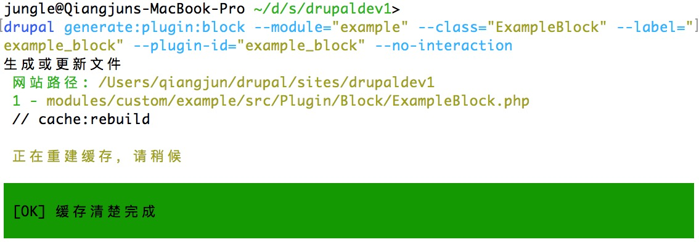
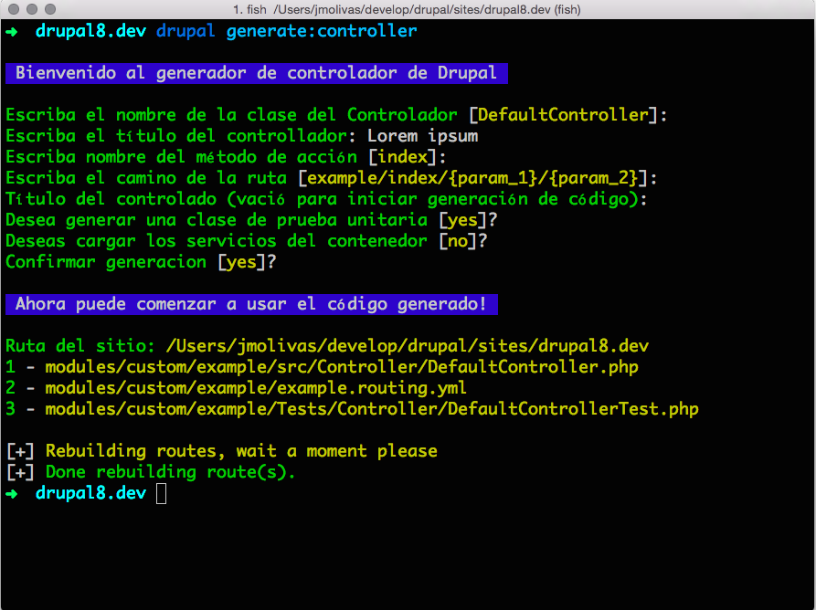
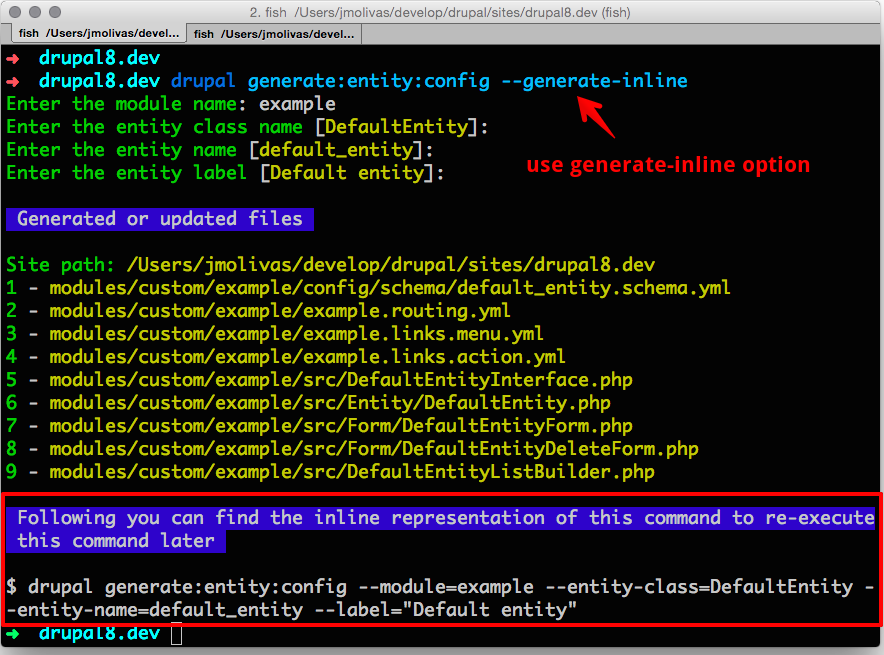
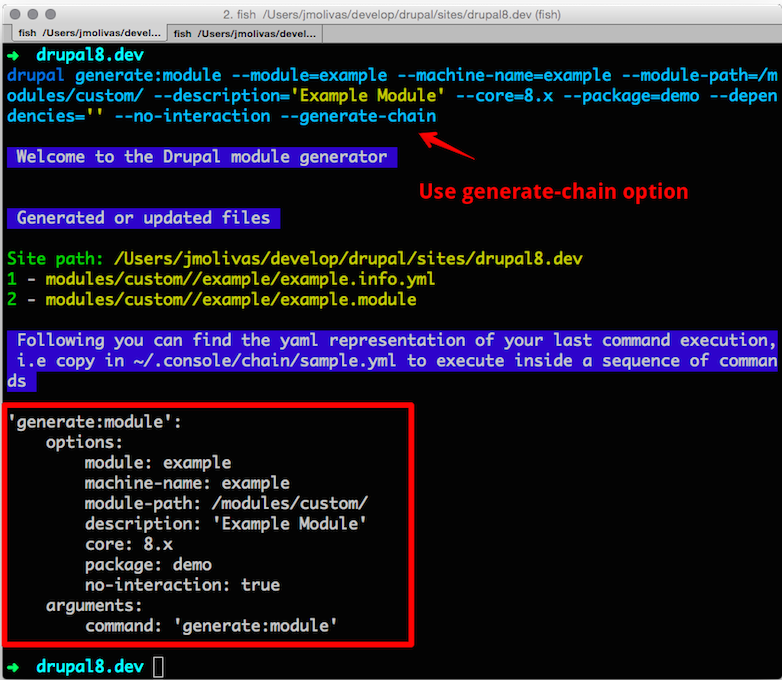

Drupal 8 Development Workshop

About me

enzo - Eduardo Garcia
CTO

Phase2 Partner
Location: Costa Rica
(You're welcome to visit us and work from the tropics)
About us and who maintain this project?
Eduardo García | @enzolutions

Jesús Manuel Olivas | @jmolivas

Omar Aguirre | @omers
What is the Drupal Console?
It is a suite of tools that you run on a command line interface (CLI) to generate boilerplate code and interact with a Drupal 8 installation.
Supporting organizations

Download Drupal Console
Using the Installer
Install the Console locally by running the installer
in your project directory:
$ curl http://drupalconsole.com/installer -L -o drupal.phar | php
$ mv drupal.phar /usr/local/bin/drupal
$ drupal
drupal init

Getting & Installing Drupal
drupal chain --file=quick-start.yml

site:new

Generate the code and files
required by a Drupal 8 module.
generate:module

generate:controller

example.routing.yml
src/Form/ExampleForm.php
src/Form/ExampleForm.php
src/Form/ExampleForm.php
generate:plugin:block
$ drupal generate:plugin:block
--module="example"
--class-name="ExampleBlock"
--label="example_block"
--plugin-id="example_block"
--no-interaction

Other generators
generate:authentication:provider
generate:entity:config
generate:event:subscriber
generate:permissions
generate:plugin:field
generate:plugin:fieldformatter
generate:plugin:fieldtype
generate:plugin:fieldwidget
generate:plugin:imageeffect
generate:plugin:rest:resource
generate:plugin:rulesaction
generate:plugin:type:annotation
generate:plugin:type:yaml
generate:service
generate:theme
Interact with your Drupal
installation.
container:debug
router:debug
router:debug
site:mode

config
config
config:debug
config:edit
config:export
config:export:content:type
config:export:single
config:export:view
config:import
config:import:single
config:override
user
user
user:login:clear:attempts
user:login:url
user:password:hash
user:password:reset
Write an integration
generate:command
$ drupal generate:command
--module="example"
--class-name="HelloCommand"
--command="example:hello"
--no-interaction
Automate command execution
chain
$ drupal chain
--file=~/path/to/start-project.yml
#Protip 1
Use multilanguage feature
# ~/.console/config.yml
application:
environment: 'prod'
language: en #available: en,es,fr,hu,pt,ro
editor: vim
temp: /tmp

#Protip 2
Use default values
# ~/.console/config.yml
application:
...
default:
commands:
generate:
controller:
options:
module: my_current_project
#Protip 3
Disable contributed commands
# ~/.console/config.yml
application:
...
disable:
modules:
- broken_module_name_one
- broken_module_name_two
#Protip 4
Use command alias
$ drupal cr all
# ~/.console/aliases.yml
application:
aliases:
commands:
cache:
rebuild:
- cr
#Protip 5
Use --help option
$ drupal generate:module --help

#Protip 6
Use --generate-inline
$ drupal generate:entity:config --generate-inline

#Protip 7
Use --generate-chain
$ drupal generate:module --generate-chain

self-update
Depending on the download method:
$ drupal self-update
$ php console.phar self-update